mafalda moreaud
design graphique
Gérard Depeyris—Les savoir-faire
Format 288 x 384—format micro édition A5
Imprimé sur papier texturé 80g
Toulouse—Octobre 2017
Projet sur le thème des savoir-faire et de leur devenir. Cette édition rend compte d’une rencontre avec Gérard Depeyris, shaper
et surfeur de Lacanau-Océan. Elle a pour but d’apporter un regard différent sur les savoir-faire et incite à reprendre le temps.
Le temps de rencontrer, d’échanger, de partager, de profiter, de regarder, d’écouter, de produire, d’expérimenter, de changer,
de faire, défaire et refaire... Un lien très étroit est évident entre la philosophie de vie de Gérard, la façon dont il pratique son métier
et le fait d’être surfeur lui même. Cette considération pousse à traiter le texte, l’image et le croquis au même plan. À considérer
le gris typographique comme matière visuelle. Des contrastes sont mis en place grâce aux textes, le discours de Gérard, puis le discours
rapporté. Il y a ainsi un jeu d’aller-retour entre ses paroles et les miennes. Par ce traitement de l’information une spatialité est retranscrite,
liée aux mouvements, mais aussi aux déplacements du corps nécessaires pour la fabrication d’une planche, au rythme de la production.
À travers ce traitement, l’oeil voyage dans les blancs typographiques. Le texte prend alors une dimension plus poétique qui fait écho
à l’aspect contemplatif désiré pour de cette édition. La contemplation est évoquée ici car le surf relève d’une autre temporalité.
Une autre temporalité pour bouger, pour regarder, pour appréhender un milieu. Dans ce sport comme dans le métier de shaper, l’oeil,
le visible, le perceptible sont d’une grande importance. L’oeil décode, et permet de retranscrire en gestes et en formes. Les pages
ne sont pas reliées entre elles. Le lecteur peut les manipuler ensemble, comme elles ont été pensées, mais aussi seules ou dans
un ordre tout à fait aléatoire. Les photographies de l’édition ne sont pas des illustrations elles font parties du déroulement
de la rencontre, elles racontent une autre histoire. Une histoire sans mots, faite de ressentis, de couleurs et de ambiances.
Malgré le fait que le texte soit traité comme une matière, une «sensibilité» est quand même portée au discours. Certaines coupures
ne sont pas anodines. Elles apportent du sens, appuient la signification de certains mots ou le ton employé.
et surfeur de Lacanau-Océan. Elle a pour but d’apporter un regard différent sur les savoir-faire et incite à reprendre le temps.
Le temps de rencontrer, d’échanger, de partager, de profiter, de regarder, d’écouter, de produire, d’expérimenter, de changer,
de faire, défaire et refaire... Un lien très étroit est évident entre la philosophie de vie de Gérard, la façon dont il pratique son métier
et le fait d’être surfeur lui même. Cette considération pousse à traiter le texte, l’image et le croquis au même plan. À considérer
le gris typographique comme matière visuelle. Des contrastes sont mis en place grâce aux textes, le discours de Gérard, puis le discours
rapporté. Il y a ainsi un jeu d’aller-retour entre ses paroles et les miennes. Par ce traitement de l’information une spatialité est retranscrite,
liée aux mouvements, mais aussi aux déplacements du corps nécessaires pour la fabrication d’une planche, au rythme de la production.
À travers ce traitement, l’oeil voyage dans les blancs typographiques. Le texte prend alors une dimension plus poétique qui fait écho
à l’aspect contemplatif désiré pour de cette édition. La contemplation est évoquée ici car le surf relève d’une autre temporalité.
Une autre temporalité pour bouger, pour regarder, pour appréhender un milieu. Dans ce sport comme dans le métier de shaper, l’oeil,
le visible, le perceptible sont d’une grande importance. L’oeil décode, et permet de retranscrire en gestes et en formes. Les pages
ne sont pas reliées entre elles. Le lecteur peut les manipuler ensemble, comme elles ont été pensées, mais aussi seules ou dans
un ordre tout à fait aléatoire. Les photographies de l’édition ne sont pas des illustrations elles font parties du déroulement
de la rencontre, elles racontent une autre histoire. Une histoire sans mots, faite de ressentis, de couleurs et de ambiances.
Malgré le fait que le texte soit traité comme une matière, une «sensibilité» est quand même portée au discours. Certaines coupures
ne sont pas anodines. Elles apportent du sens, appuient la signification de certains mots ou le ton employé.
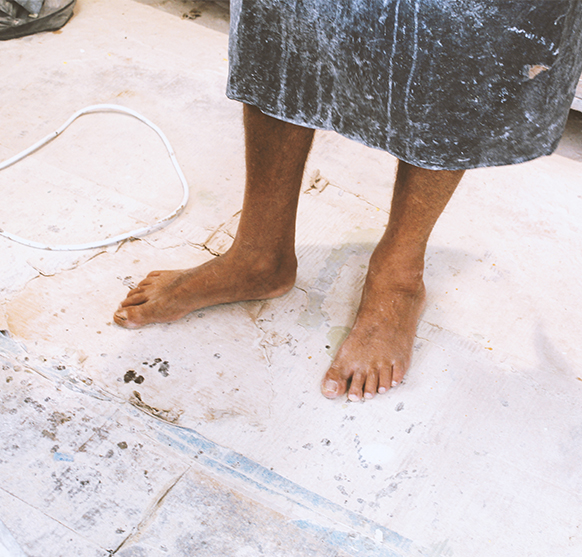


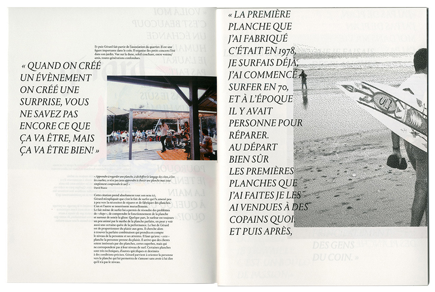

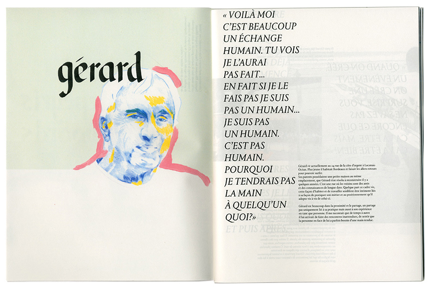

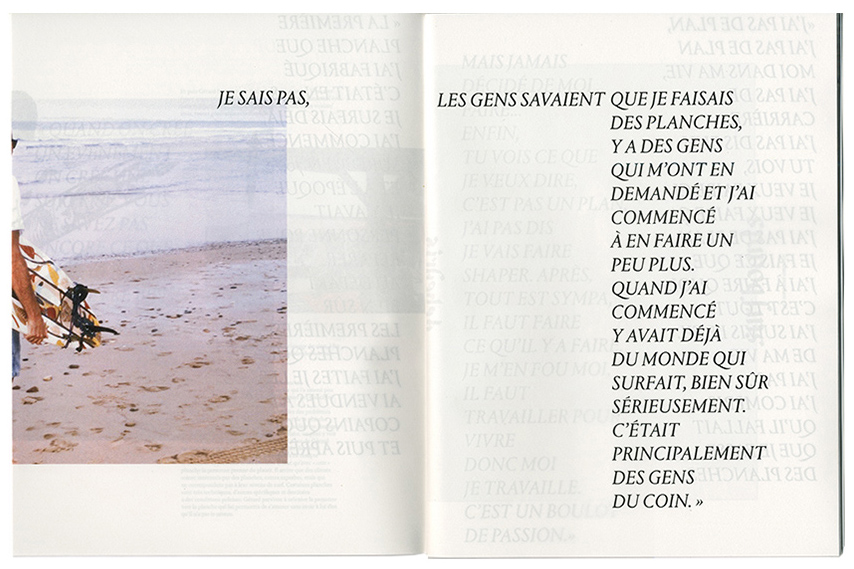

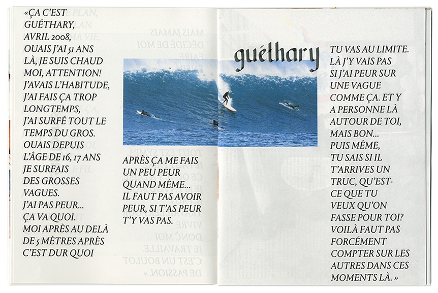
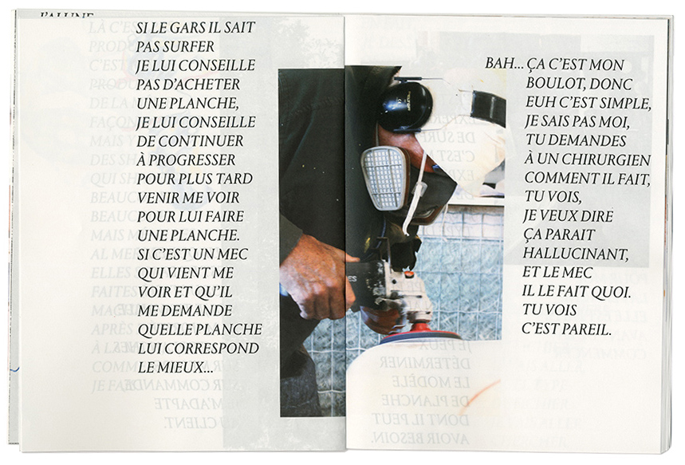
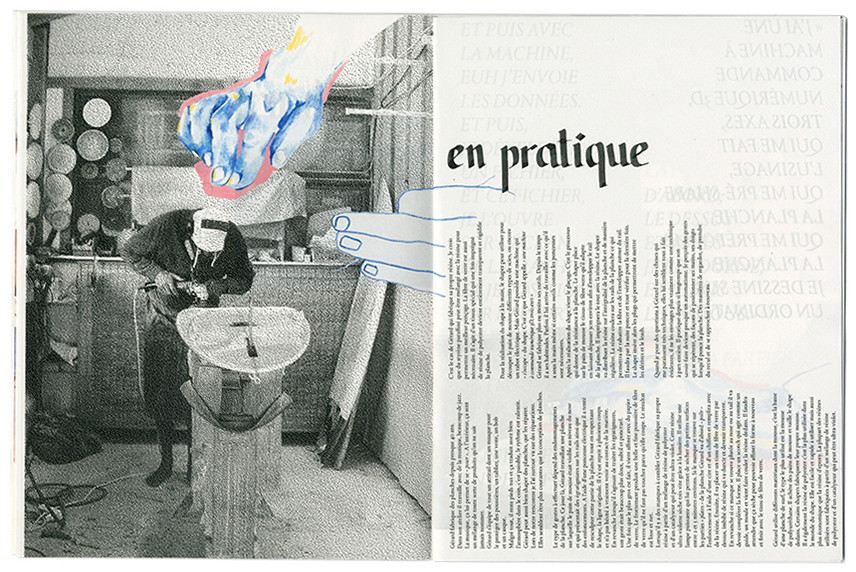
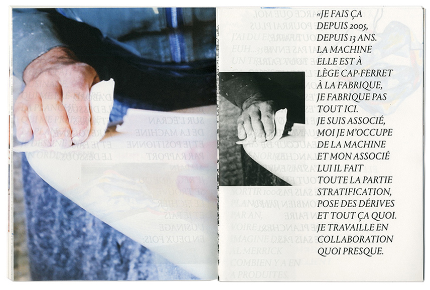


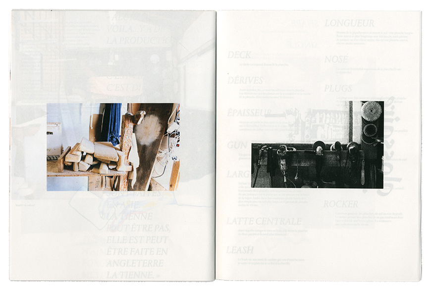
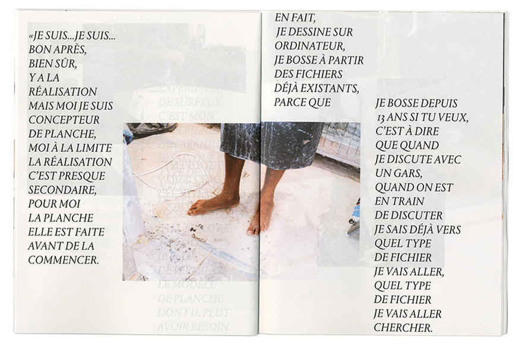
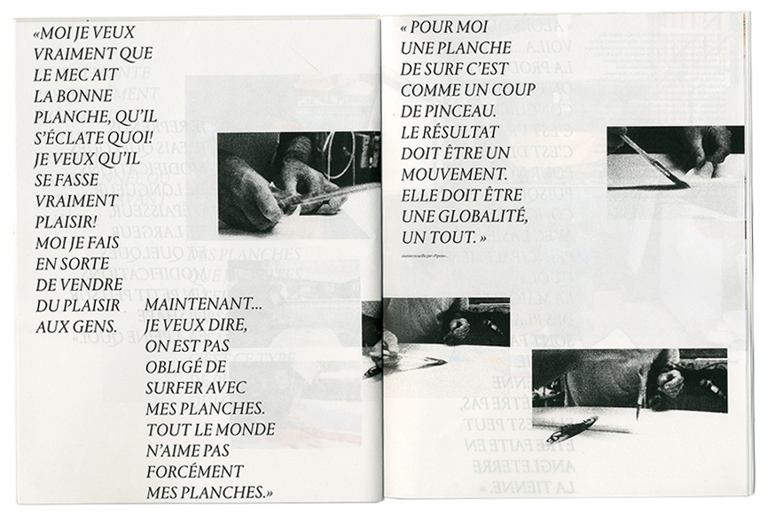

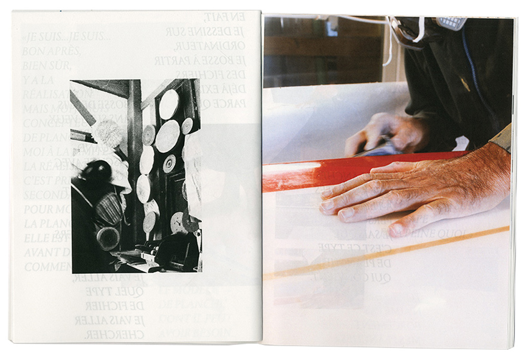

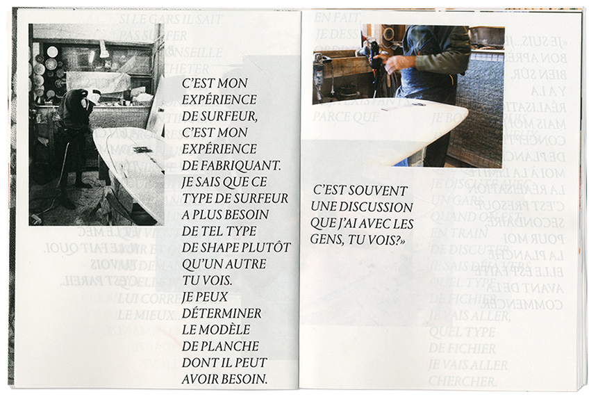